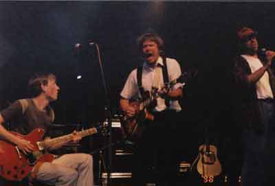

Уже после возвращения с фестиваля "NOC BLUESOWA", который состоялся в конце мая в польском городе Рава Мазовецка, на одном из сайтов пришлось познакомиться с продолжительной, объемной дискуссией двух завзятых любителей музыки. Они спорили на тему, может ли быть такое явление, как белорусский джаз и блюз, а если да, то каковы критерии, определяющие его.Собственно говоря, проблема дефиниции действительно существует. Да, можно утверждать, что по-настоящему блюзовую музыку, которую исполняют белорусские музыканты, пускай даже очень высокого уровня, собственно блюзом называть нельзя: по большому счету, это все равно будет имитация, стилизация, в любом случае - более или менее удачные. А вот если зайти от противного и представить себе хоть на пару минут жителя Нью-Орлеанщины, потомственного афроамериканца, который вдруг подсел на белорусский фольклор и исполняет его в свободное от работы на хлопковой плантации время, да иногда в компании таких же любителей вековой экзотики на различных фестивалях. Представили, да? Так вот: это - что такое? Опустим акцент, неуверенное владение цимбалами да дудой, цвет кожи. Белорусский фолк в их исполнении - это по-настоящему или кич? И будет ли кто-нибудь в дельте Миссисипи всерьез задаваться вопросом, искусство это или подделка?
Белорусское трио "Big Val, Svet & Al" в конкурсной части фестиваля "NOC BLUESOWA 2003" было признано лучшим, опередив при этом 10 других коллективов из пяти стран Европы. Поскольку я работал в составе международного жюри, то сам видел, насколько удивились в первую очередь польские коллеги, для которых уровень, артистизм, подлинность и достоверность исполнения белорусов стали настоящим сюрпризом. И вот ведь что показательно: на этом конкурсе и не пахнет давним социалистическим принципом, согласно которому на подобных соревнованиях все "сестры" получали свои серьги если не по очереди, то хотя бы по рангу. В Раве Мазовецкой победить вовсе не так просто, благодаря красивым глазам здесь премии не раздают. В Польше давно знают толк в блюзе, разбираются в его тонкостях преотлично и не дурят себе головы вопросами типа "А что это такое - польский блюз?".
По одной причине: блюз или есть, или его нет. А уж кто его исполняет - должно волновать меньше всего.
Состав этого конкурса складывался следующим образом. Предварительное прослушивание польских любительских коллективов проходило на основании присланных записей. Таких коллективов было 20, из их числа оргкомитет отобрал шесть. К ним присоединились еще пять из пяти же стран: Беларуси, Франции, Словакии, Германии, Чехии. Эти коллективы представлялись непосредственно членами жюри. То есть поездка нашего трио была целиком на моей совести, и непременно победить цели не ставилось. Прежде всего потому, что "NOC BLUESOWA" предоставляет начинающим исполнителям отличный шанс потусоваться в профессиональной атмосфере, познакомиться с исполнителями из других стран, выступить на прекрасной аппаратуре да послушать тех, кто приглашен на фестиваль в качестве гостей. Напомню, что организаторы ставят два главных условия участникам конкурса: чтобы эти коллективы не имели изданных альбомов да подписанных контрактов с издательскими фирмами. Возраст, стаж, уровень первоначально не имеют значения. Главным фактором, опять же, предстает чувство блюза да еще оригинальность его презентации.
И вот как это выглядело на практике. Скажем, трио "Rene Lacko Band" из Словакии имеет большой стаж выступлений, хорошо известно в своей стране. Сам Рейс, возрастом за сорок, во всем следует образу Стива Рэй Воана, вплоть до мельчайших подробностей, играет отлично, как и его коллеги. Да вот проблема: во всем выступлении трио был только Стив Рэй Воан, а вот Рене Лацко на его фоне оставался каким-то незаметным. Жюри на это не "купилось". Или польская группа "J.J.Band": мощно сыгранная команда, которая вот уже два года постоянно берет на разных конкурсах первые места, друзья минской группы "Mojo Blues". Все на месте, в тройку призеров, по-моему, попадала yаверняка. Да во время обсуждения в жюри польские коллеги взяли и поставили вопрос: мол, группа в последнее время почти не выступает, ездит по конкурсам, рубит блзовую "капусту" благодаря действительно хорошему уровню. А не проучить ли, панове, нам этих блюзовых нахлебников? И таки проучили сняли этот коллектив с обсуждения по причине паразитирования на блюзовой идее.
Кстати, "Big Val, Svet & Al" оказались единственным в конкурсе коллективом, который исполнял акустический, чуть ли не корневой дельта-блюз. Тут нужно отметить, что большую роль сыграл факт преотличного владения Биг Вэлом не только языком, но и типично черным, блюзовым произношением. К тому же, наши разыграли небольшой спектакль, когда было совершенно непонятно, то ли они еще настраиваются, то ли уже играют. В общем, уже во время конкурса стало понятно, что белорусы смотрелись не то что не хуже остальных, но по многим позициям просто лучше, убедительнее.
Победителей жюри определяло в два захода. Семь человек из пяти стран поначалу назвали любое количество групп, которые обратили на себя внимание. Белорусов назвали все без исключения. Во втором туре обсуждения рассматривались уже только три кандидатуры, набравшие большее количество голосов. Каждый из членов жюри определял первого, второго и третьего лауреата. В итоге "Big Val, Svet & Al" набрали 1б баллов, чешская группа "Hoochie Coochie Band" 13, французская "Tia and the Patient Wolves" - 5. Отдельно встал вопрос о польской группе "Patchwork" из небольшого городка Радлина. Группа не очень высокого уровня, но вот для всех моих польских коллег (и не только их) подлинным открытием стала солистка Александра Лысяк. Дело в том, что голосом, манерой исполнения она необыкновенно походила на Джэнис Джоплин. Просто какой-то блюзовый клон! Но конкурс-то был коллективов, а не солистов! В конце концов, дабы как-то отметить этот необыкновенный дебют, решили по справедливости распределить премиальный фонд, чтобы отметить это 18-летнее дарование.
Наши подружились с чехами еще во время саунд-чека. Немудрено: чешский квартет (гармошка, гитара, ударные, контрабас) во главе с гитаристом, певцом, шоу-мэном и по совместительству учителем, средней школы исполнял чикагский блюз 50-х, делая это с юморком, артистизмом, невероятно энергичной подачей. На следующий день наши и чехи отправились в город, где джемовали на улице, на заработанные деньги пили пиво, а когда узнали о совместной победе, тут же решили на концерте лауреатов выступить вместе. Что и сделали с невероятной легкостью и успехом. А вот французы взяли третье место в первую очередь благодаря своему лидеру - гитаристке и вокалистке Тие. У нее красивый, глубокий голос, да вот от блюза достаточно далекий. Музыка группы явно ощущает влияние шансона, за счет чего в целом коллектив и выиграл. Интеллигентный такой, и чисто французский блюз. Обменялись с нашими записями и также выпили пива...
... Главный итог поездки таков. По-первых, "Big Val, Svet & Al" тут же получили приглашение выступить на чешском фестивале "Блюз в лесу", но так как он проходил уже на следующие выходные, приглашение пришлось перенести на следующий год. Так же опоздали наши с заявкой на фестиваль в польский Ольштын, а вот шансы на то, чтобы осенью отыграть в варшавских блюзовых клубах да выступить на фестивале в Белостоке есть все. Во-вторых, власти Равы Мазовецкой поняли, какую рекламу городу дает фестиваль, и поэтому на сей раз пригласили из Минска двух человек с БТ, в результате чего почти часовой отчет о фестивале да нескольких репортажей были показаны на всю нашу страну.
И тогда многие убедились, что есть в Беларуси музыканты, практически неизвестные на родине, но способные убедить своей музыкой многих знатоков за границей.